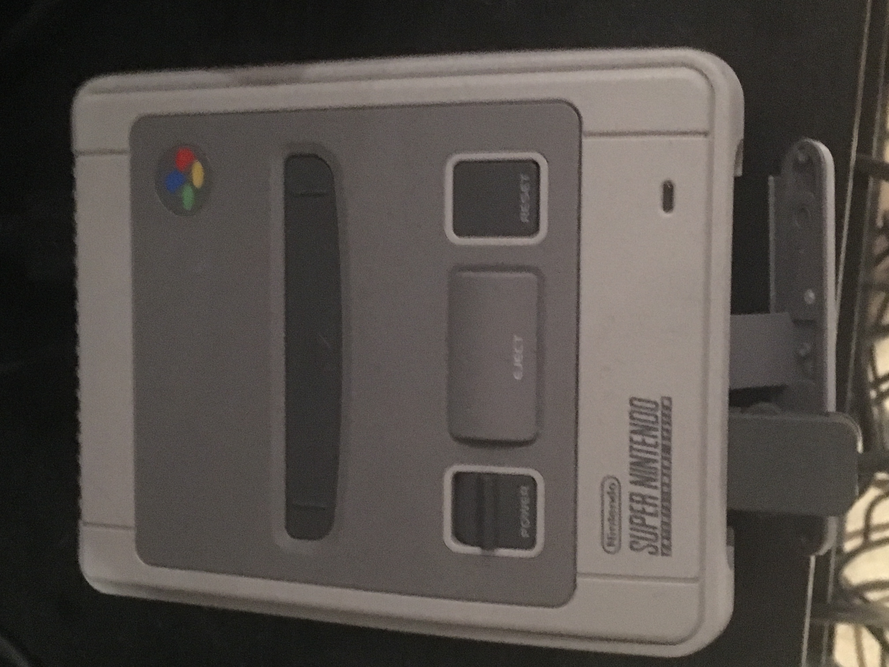
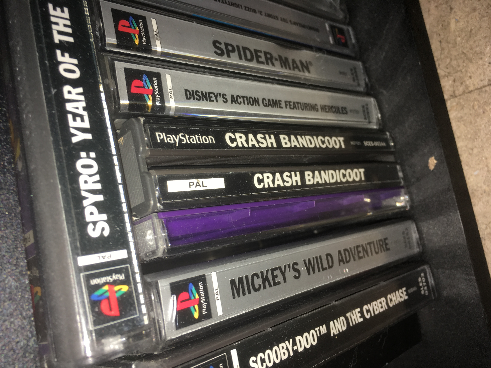
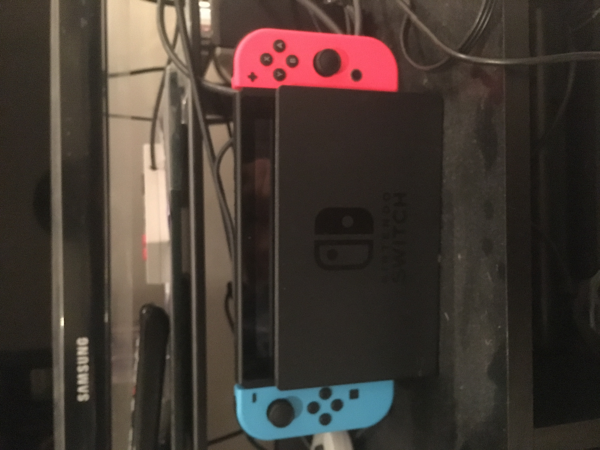

Hello Gamers
Welcome to GameView.

Written Review
Latest WrittenReview
The latest written review is.
Are mini consoles such as the SNES classic mini the best way to play retro games or are they just small boxes trying to act like the real thing?


VideoReview
Latest VideoReview
The latest video review is.
Are mini consoles such as the SNES classic mini the best way to play retro games or are they just small boxes trying to act like the real thing?